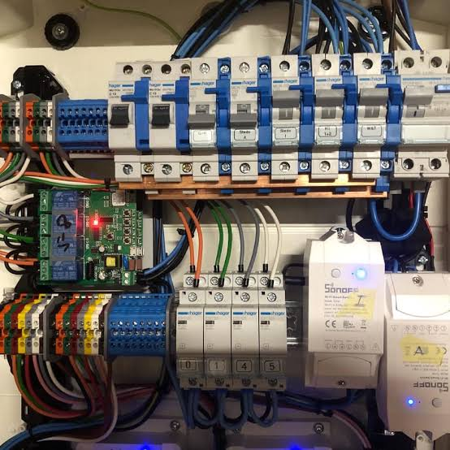
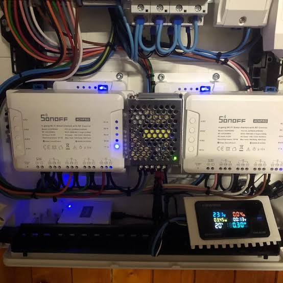

Tutti i servizi
ELETTRICITÀ / MULTISERVICES
Assistenza impianti elettrici a Merate
Per problemi o necessità di manutenzione dell’impianto elettrico, contatta Multiservices e descrivi la situazione.

Come possiamo aiutarti
- Valutazione delle anomalie segnalate
- Manutenzione di componenti dell’impianto
- Assistenza e definizione dei lavori necessari
